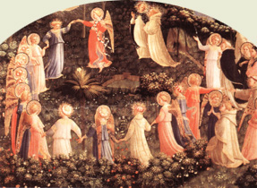

|  |
|---|
[91313] De arte musica, n. 1 Cum humana natura naturaliter scire desiderat, et a primi hominis (peccato) prisco sunt quattuor quae naturam impediunt (humanam) scilicet ignorantia, vitium, imperitia loquendi et indigentia; quibus tamen quattuor bona sunt opposita scilicet ignorantiae sapientia, vitio virtus, imperitiae loquendi eloquentia, indigentiae necessitas, ideoque divina clementia philosophis peritiam artes inveniendi concessit, ut per eam quisque notitiam valeat praedicta bona comprehendere, et fruendo iis lapsam naturam ad meliorem conscientiam sublimare. Quoniam circa musicam quaedam necessaria ad utilitatem cantantium tractare ponimus, necesse est quod secundum auctoris intentiones subtilissimas regulas summopere subjectas intelligere studeamus. Cum igitur musica inter septem artes liberales sola tenet principatum sicut scribit philosophus. Musica est quae in Ecclesia triumphanti et militanti Deo fuit dulcisona quam sancti in suis devotionibus amplexantur qua peccatores veniam petunt, qua tristes confortantur, qua spiritu vexati levius se habent, qua pugnantes animosiores efficiuntur. Quoniam sicut dicit Isidorus in libro Ethimologiarum quia (non) minus est dedecus nescire canere quam litteras ignorare, quum sancti cum Angelis et Archangelis cum thronis et dominationibus, cumque omni militia coelestis exercitus non cessant cantare cotidie dicentes: sanctus, sanctus, et cetera. Apparet ergo quod est nobilior scientiarum, et quod eam quilibet debet apte scire prae omnibus aliis. Et hoc idem potest probari. Nam nulla scientia ausa fuit intrare fores Ecclesiae, praeter quam ipsa musica.
[91314] De arte musica, n. 2 Antequam aliud determinemus de ipsa nec secundum definitionem nec secundum divisionem, necesse est videre quomodo fuit inventa, et qui fuit primus inventor. Debemus scire quod secundum quosdam scilicet secundum Graecos Pitagoras fuit inventor primus. Cum ipse iter ageret ad quandam (fabricam venit qua) in superincudes quinque mallei ferrei feriebant, ob quorum tam suavem concordiam ipse miratus accepit primus in varietate manum sperans vim soni ac modulationis existere mutavit malleos. Quo facto suavitas quaeque secuta est. Subtracto uno qui dissonus erat a ceteris alios in mirum modum divinoque ritu ponderavit, sex uncias octo et novem. Cognovit autem in numerorum proportionem et collectionem musicae versari scientia. Moyses autem dicitur repertorem fuisse artis musicae Tubal (qui fuit) de stirpe, Caim qui fuerunt ante diluvium. Omnibus namque propositis talibus, attendamus ad principalem propositum videlicet ad cognitionem ipsius musicae. Et quia omnis scientia duplici cognoscitur via, scilicet via diffinitiva et divisiva, via diffinitiva primo. Musica est liberalis scientia potestatem cantandi subministrans, et dicitur a moys quae et aquam dicimus, quia est scientia quasi scientia inventa juxta aquam. Vel dicitur musica a Musis quia secundum fabulam fuit filia Jovis. Et dividitur in musicam mensurabilem et immensurabilem. Mensurabilis est quae per mensuram procedit atque procedit per rectas longas et breves. Immensurabilis est per oppositum se habet non procedit per rectas longas et breves et illa dicitur plana musica. Notandum est quod ille dicitur proprie musicum esse qui cantat artificialiter et non usualiter. Unde versus: bestia non cantor qui non canit arte sed usu. Non vox cantorem facit artis sed documentum.
[91315] De arte musica, n. 3 Hoc viso accedamus ad principalem propositam viam, ut ad quasdam regulas (perveniamus) mediantibus quibus poterimus habere cognitionem ipsius musicae usualiter cum cantu. Unde sciendum est quod sex sunt voces quibus omnis cantus multiformis contexitur ut re mi fa sol la quae pro septem litteris scilicet a b c d e f g (ponuntur) quae quidem licterae pluribus modis in gamma ut accipiuntur juxta hoc debemus scire quae generaliter sunt viginti literae. Sciendum est quia tres sunt modi cantus scilicet bq quadratum natura et bm molle. Ubicumque est g ibi ut cantatur per bq quadrum, et omnes voces descendentes ab illa scilicet ut re mi fa sol la, ubicumque sunt istae voces. Et ubicumque est c ibi ut cantatur per naturam et omnes voces descendentes ab illa. Et ubicumque est f ibi ut cantatur per bm molle. Unde versus: c naturam dat, f bm molle tibi signat; g quoque bq durum te semper habes cani tantum. Istarum ergo viginti litterarum praedictarum septem primae dicuntur graves, eo quod videntur aggravare hominem a restrictione arteriarum propter cantum inferiorem. Acutae dicuntur eo quod acuta voce et arteriis apertis emittuntur. Superacutae dicuntur eo quod superacutas ponuntur voce subtili et superacuta emittuntur. Quid est gamma ut a re b mi et sic de aliis. Quot voces et quot mutationes quibus habet propter tedium et quae commune, puerile illud est, ideo ista dimittamus. Et debemus scire quod si una vox est in linea alia est in spatio, et sic de aliis.
[91316] De arte musica, n. 4 Hoc habito de singulis vocibus et de modis cantus et sic de aliis videndum est de mutationibus diffiniendo. Sic mutatio est prout hic sumitur (nihil) nisi aliud est quod divisio vocis unius per aliam sub eodem signo et eodem spatio vel sono. Unde sequitur ubicumque est mutatio oportet ad minus quod ibi sint duae voces. In gamma ut, are, bmi, et in ela, non est aliqua mutatio eo quod istorum quilibet solam vocem continet. Nec in bfa, bmi, quoniam ibi sunt diversa signa et diversae voces, et quia non ponuntur sub una voce nec sub uno tono ideo non potuit esse mutatio quia tunc esset contra definitionem mutationis. Nam si esset sub uno sono deberet dici b fa mi, sed dicitur bfa, bmi. Et est sciendum quod sunt duae voces sicut in ffaut, et ut fa et sic de aliis. Ubi sunt tres voces ibi sunt sex mutationes. In g sol (re ut) ubi dicitur (sol re, re sol, sol ut) et sic de omnibus aliis, quoniam ubicumque sunt tres voces, immutatur prima in secundam et e contrario. Et in hac voce non duplicantur duae (voces) per quatuor sicut tres per sex. Unde regula quod (omnis) mutatio desinens in ut re mi dicitur ascendendo quod plus habet ascendere quam descendere. Et omnis mutatio desinens in fa sol la dicitur descendendo quia plus habet descendere quam ascendere. Unde versus: ut re mi scandit ut fa quoque sol la. Unde sciendum quod mutatio sumitur dupliciter, aut causa ascensionis aut causa descensionis ut patet in c fa ut. Habito de singulis et c ---.
[91317] De arte musica, n. 5 Quia omnis musica tam mensurabilis quam immensurabilis sive plana quae ideo est quae (mittat) et habeat considerare per tresdecim species. Nam ad ista sunt necesse. Ideo de istis quot sunt et quomodo quaelibet cognosci (potest) videamus. Sciendum est quod tresdecim species vocis sive species musicae, videlicet unisonus, semitonus, tonus, semiditonus, ditonus, Diatessaron, tritonus, diapente, semitonus cum diapente, tonus cum diapente, semiditonus cum diapente, ditonus cum diapente, diapason. Unisonus dicitur sonus unius vocis a qua non fit progressio. Unum semper habet esse in eadem linea, vel in eodem spatio. Si vero progrediatur a quadam voce tangendo propinquam, tunc aliquando fit tonus, aliquando semitonus, et ponitur unisonus in quacumque clave fuerit necessarius et sicut notae aequales. Unde sciendum est quod numquam fit semitonus nisi de mi in fa vel e contrario ut patet in exemplo. Et dicitur semitonus a semus, sema, semum; quod est imperfectum et tonus quia imperfectus tonus. Quod autem (Boetius) determinavit de semitono per solutionem cujusdam quaestionis. Nam ita est quod aliter per falsam musicam facimus semitonum ubi non debet esse. Nam in mensurabili musica aliud videmus quod tenor alicujus motecti vel organi vel conducti stat in bfa, bmi dicendo per bq durum tunc accipiendo in diapente sive discantum oportet dicere mi (aut inferius aut) superius, et sic per falsam musicam. Nam facere diapente a mi in fa non bona est concordantia, quia fa magis habet de sono quam mi et oportet quod ubi est diapente ab una voce in aliam ibi sit bona concordantia. Et ideo oritur quaestio quomodo ex hoc quod loquendi necessitas fuit in musica regulari de falsa musica sive de falsa mutatione; cum nullum regulare dicitur ac accipitur falsum sed potius verum. Ad quod est dicendum quod mutatio falsa sive falsa musica non est inutilis imo est necessaria propter bonam consonantiam inveniendam et malam vitandam. Nam sicut dictum est si velimus habere diapente de necessitate oportet quod habeamus tres sonos cum semitono: itaque si aliqua (figura) sit in bfa et mi sub bq quadratum et alia in fa ut acuta per naturam, tunc non est ibi consonantia, sed dissonantia cum semitono sed duo tantummodo cum semitono duplici. Verumtamen fieri potest ibidem sed per falsam musicam (quam) appellamus, scilicet quando facimus de semitono tonum vel e contrario, non tamen falsa musica sed inusitata. Unde notandum est quod bm molle non est de origine aliarum clavium. Hoc autem cognoscitur per signum bq quadrati vel bm rotundi in loco inusitato (locatum; ita quod dicamus mi durum in f acutum cum signo bq quadrati, vel si bm rotundum) ponamus in bfa, bmi, vel in consimilibus, ita quod sit in toni proportione et tunc erit cum diapente consonantia. Et ideo falsa musica est necessaria quandoque. Et etiam ut omnis consonantia seu melodia in quolibet signo perficiatur. Etenim tonus quaedam percussio aeris indissoluta usque ad auditum sicut de gravi ad acutum videlicet de g ad a vel e contrario, et sic tali modo, scilicet ut re, et re ut, re mi, et mi re, fa sol, et sol fa, sol la, et la sol, et dicitur tonus a tono, tonas, eo quod perfecte sonat, idest perfecte ostendit distantiam inter duas voces, ubicumque duae voces a linea in spatio continuantur semitono ex converso ut dictum est, et habet fieri in sexta vel octava proportione. Semiditonus est spatium inter duas voces continens semiditonum et tonum et e contrario, et fit duobus modis, scilicet re fa, mi sol et e contrario ut hic patet. Ditonus est spatium inter duas voces continens duos tonos ascendendo ut mi et fa la, et e contrario descendendo et dicitur a dya quod est duo et tonus eo quod continet in se duos tonos unde tres voces faciunt duos tonos ut hic patet. Diatessaron est quaedam consonantia quae inter duas voces continet tantumdem sicut ditonus cum semitono ut patet in exemplo sequenti et dicitur a dya quod est de et tessa quod est quattuor, et saron quod est vox quasi de quattuor vocibus constituta et fit tribus modis, ascendendo, ut fa, re sol, mi la, et totidem descendendo. Ex qualibet enim voce quarta fit Dyatessaron praeter ab f gravi in b acutum. (Fieri tamen potest ibidem et in consimilibus si necesse fuerit per falsam musicam) supradictam. Tritonus est spatium voce manifestans videlicet ab f gravi in b acutum. Diapente est quaedam consonantia quae ascendendo scilicet ut sol, re la, et totidem descendendo et dicitur a dya quod est de et pente quae est quinque quasi de quinque vocibus constituta. A qualibet enim voce quinta fit diapente (nisi) a b gravi in f gravem vel a b acuta quadrata ad f acutam. Fieri tamen potest ibidem per falsam musicam in consimilibus. Semitonus cum diapente est spatium inter duas voces continens in se tres tonos cum duobus semitoniis scilicet a c acuta in e grave et in consimilibus. Concepta quia non est alicujus linguae sed intellecti persistitum. Nota quod ista infrascripta principaliter requiruntur ut musica plana efficiatur cantus, videlicet, septem litterae, sex voces, septem consonantiae, et modi duo, de his omnibus per carmina inferius videndum est.
[91318] De arte musica, n. 6 Septem sunt licterae a b sunt et istae duo sunt quae claves c et f naturales septem in colore videtur esse morem tres sunt perfectae sed quattuor imperfectae bini duce datur b fa mollificatur. Vox ut principalis re sequens et talis mi dum pergit dura fa molle in natura solque naturalis la fertur et regalis omnis mutatio fit in ipsis ratio haec elevatio vocis et depositio. To, se, di, se, dia, di, parum melodia firme duas tene perfecte philomeam quattuor Latine sed tres Grece fine fit temperantia omnis consonantia diciturque sonus a quo ab intonando tonus. Modi sunt tales authentici et plagales decimam in altum unam et duas tantum septimam ascendunt sed quintam descendunt cantus resonetur Psalmus intonetur.